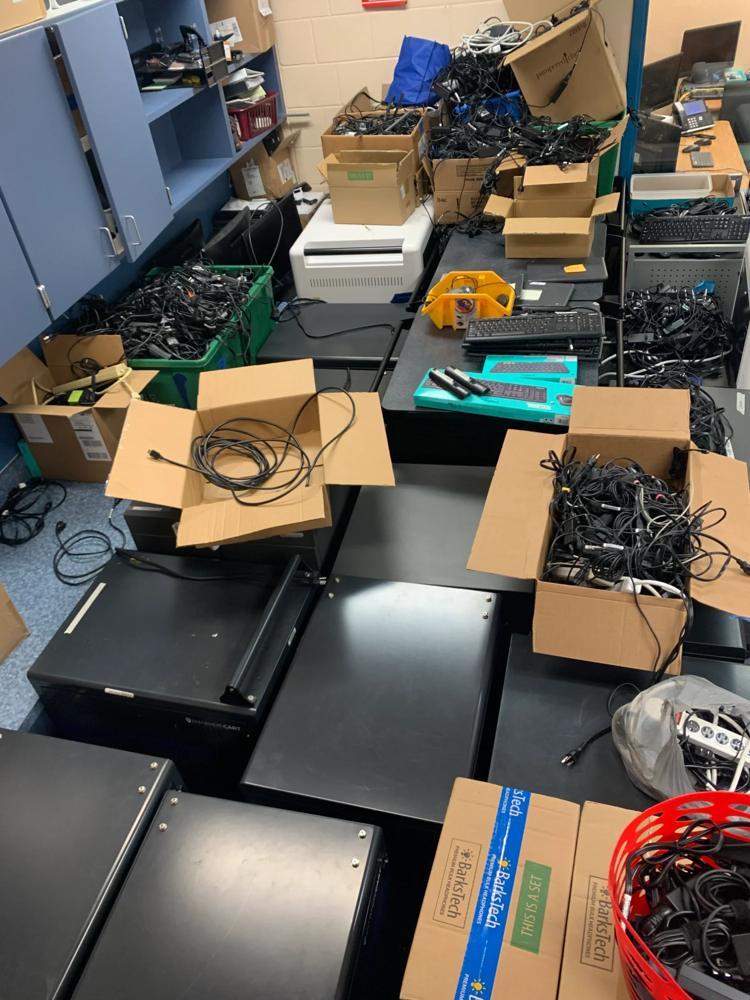
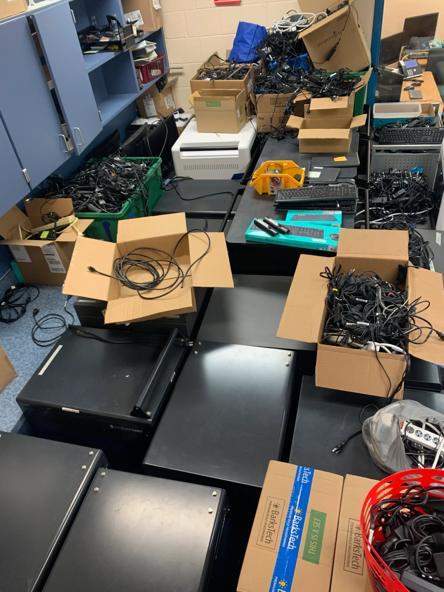

Palmview K-8 Computer Lab
Managing technology operations and building documentation systems for a K-8 school with hundreds of devices across multiple platforms.
The Challenge
When I arrived at Palmview K-8, there was no centralized documentation system. Technical staff had to figure things out from scratch each time. Teachers struggled with interactive displays. Devices were managed without consistent processes.
I saw an opportunity to build systems that would outlast my time there.
- Hundreds of devices across Windows laptops, Chromebooks, iPads, and tablets
- No searchable documentation for common technical issues
- Newly onboarded technical staff needed training resources
- Teachers needed support on interactive display technology
The Scale
This wasn't a small operation. Here's what end-of-year inventory looked like:

 


What I Built
Quick Reference Guides & Knowledge Base
I created a documentation system using Stack Overflow methodologies—searchable, categorized, and built to reduce repeat questions. Notice the handwritten quick-reference guides taped to the wall:
- TABLETS checklist: Step-by-step reset procedures
- Powerwash instructions: Ctrl+Alt+Shift+R sequence for Chromebooks
- Device labeling system: Organized by type and assignment
- Charger organization: iPad, Samsung Student, Samsung Teacher categories
These weren't fancy—they were functional. The goal was enabling self-service and reducing repeat support requests.
Deliverables
- Knowledge base using Stack Overflow methodologies for searchable documentation
- Quick-reference guides for common procedures (device resets, Powerwash, troubleshooting)
- FAQs addressing frequently asked technical questions
- Troubleshooting articles enabling self-service resolution
- Inventory systems tracking devices across multiple platforms
- Onboarding documentation for newly hired technical staff
Results
- Reduced repeat support requests through self-service documentation
- Improved onboarding for new technical staff with ready-made resources
- Teacher enablement on interactive display technology
- Systematic inventory management across Windows, Chromebook, and iOS platforms
- Documentation that outlasted my role—built to be maintainable
Skills Demonstrated
The Pattern: Just like with XactechED and Arizona Esthetics Institute, I identified a gap, built systems to address it, and created resources that enabled others to succeed. The scale and context change—the approach doesn't.